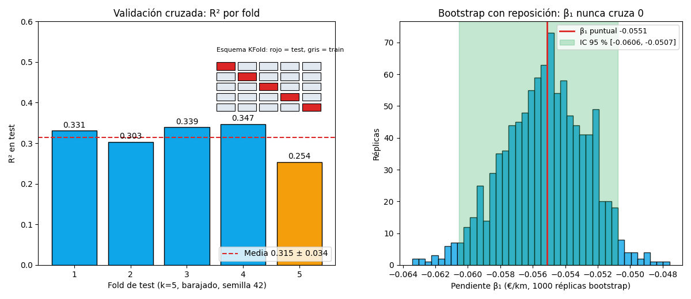

Bloque D · Regresión lineal, selección y regularización · Lección 0047 · mié 16 sep
Remuestreo: validación cruzada y bootstrap
Win de hoy: medir Price ~ KM sin autoengañarte:
validación cruzada
k=5 da R² 0,315 ± 0,034 (5 tests honestos, no uno),
y bootstrap
con 1000 réplicas encierra la pendiente KM en [−0,0606, −0,0507]: nunca cruza 0.
1 · Por qué remuestrear: un test no alcanza para elegir
La lección 0043 dejó una regla de oro: el test 20 % no se mira hasta el final, porque si elegís el modelo mirando el test, el test deja de ser honesto. Pero entonces, ¿con qué comparás candidatos antes del veredicto final? ¿Con el train? No: medir en train es preguntarle al alumno con el machete en la mano. La salida de clase es la validación cruzada: la misma idea del K-Fold k=10 de la lección 0003, ahora como método general para elegir modelo, y el bootstrap para medir incertidumbre (¿qué tan firme es mi pendiente?). Remuestrear es sacarle más jugo a los 1436 autos sin pedir datos nuevos: reordenás y re-sorteás lo que ya tenés.
2 · Validación cruzada: k tests honestos que rotan
El K-Fold
parte los autos en k grupos (pliegues) del mismo tamaño: entrena en k−1 y prueba en el restante,
rota hasta que cada pliegue fue test una vez, y promedia. Con k=5 sobre Price ~ KM
(barajado, semilla 42), cada test tiene ≈ 287 autos y el R² por fold sale
0,331 · 0,303 · 0,339 · 0,347 · 0,254: media 0,315 ± 0,034,
casi idéntica al k=10 de la 0003 (0,315 ± 0,042). El fold 5 flojea (0,254, barra naranja en la figura):
con un solo split 80/20 podrías haber ligado justo ese corte y creer que el modelo rinde menos;
el promedio de 5 cortes no depende de la suerte de un reparto.
Dos parientes: LOOCV (leave-one-out) es K-Fold con k = n: deja 1 auto afuera, ajusta con los otros 1435, repite 1436 veces. Usa casi todos los datos para entrenar, pero cuesta 1436 ajustes (con modelos lentos, imposible). Y la estratificación reparte cada pliegue conservando proporciones (ej.: mismo % de cada combustible): obligatoria en clasificación con clases raras.

Regenerar la figura (mismo resultado versionado en assets/img/toyota/):
python scripts/make_figures.py --only remuestreo-bootstrap-cv3 · Bootstrap: sortear con reposición para medir incertidumbre
El bootstrap sortea n autos con reposición: cada réplica toma 1436 autos pudiendo repetir (alguno sale 3 veces, otro ninguna). En cada réplica re-ajusta la recta y anota la pendiente; con 1000 réplicas tenés 1000 pendientes, y el intervalo percentil 95 % es simplemente la banda entre los percentiles 2,5 y 97,5. Para KM da [−0,0606, −0,0507] €/km: 1000 sorteos distintos y ninguno —ni de cerca— cruza el 0. Esa es la incertidumbre honesta de β₁ sin fórmulas mágicas.
Detalle lindo: en cada réplica ≈ 36,8 % de los autos nunca sale sorteado (límite de (1 − 1/n)ⁿ): son los out-of-bag, un mini-test gratis por réplica. Los bosques de la lección 0036 viven de este truco.
4 · Remuestreo en 17 líneas (reproducí la Fig. 1)
import numpy as np, pandas as pd
from sklearn.model_selection import KFold, cross_val_score
from sklearn.linear_model import LinearRegression
df = pd.read_csv("../ToyotaCorolla.csv") # desde lessons/
X, y = df[["KM"]], df["Price"]
kf = KFold(n_splits=5, shuffle=True, random_state=42)
r2 = cross_val_score(LinearRegression(), X, y, cv=kf, scoring="r2")
print(np.round(r2, 3), r2.mean().round(3), r2.std().round(3))
# [0.331 0.303 0.339 0.347 0.254] 0.315 0.034
rng = np.random.default_rng(42)
Xv, yv = df["KM"].values, df["Price"].values
betas = np.empty(1000)
for i in range(1000):
idx = rng.integers(0, len(df), len(df)) # con reposición
xb, yb = Xv[idx], yv[idx]
xc = xb - xb.mean()
betas[i] = (xc * (yb - yb.mean())).sum() / (xc ** 2).sum()
print(np.percentile(betas, [2.5, 97.5]).round(5)) # [-0.06056 -0.05074]Tu turno: repetí el bootstrap sobre el intercepto β₀ (precio con 0 km) y reportá su intervalo 95 %: ¿es ancho o angosto comparado con los ≈ 14.508 € puntuales? Si te sobra resto, probá k=10 y verificá que la media casi no se mueve (0,315 ± 0,042, como en la 0003).
5 · Quiz (auto-chequeo inmediato)
6 · Fuente primaria y cierre
Para profundizar (1 fuente): James, Witten, Hastie & Tibshirani,
An Introduction to Statistical Learning — capítulo 5 (remuestreo: validación cruzada y bootstrap).
Texto base del programa
(statlearning.com, PDF libre; también en
RESOURCES.md del curso). La sintaxis exacta de KFold y
cross_val_score sale de la
documentación de scikit-learn.
Orden Bloque D: esta lección cierra el bloque hacia arriba (elegir y validar modelos). Para juzgar coeficientes volvé a 0042 · Hipótesis, p-valor y t.